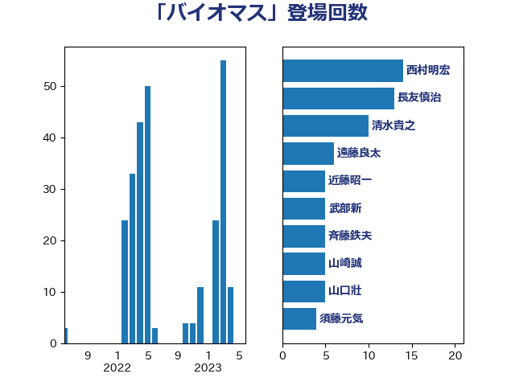

単語「バイオマス」

| 西村明宏 | 自由民主党 | 14 回 |
| 長友慎治 | 国民民主党 | 13 回 |
| 清水貴之 | 日本維新の会 | 10 回 |
| 遠藤良太 | 日本維新の会 | 6 回 |
| 近藤昭一 | 立憲民主党 | 5 回 |
| 武部新 | 自由民主党 | 5 回 |
| 斉藤鉄夫 | 公明党 | 5 回 |
| 山崎誠 | 立憲民主党 | 5 回 |
| 山口壯 | 自由民主党 | 5 回 |
| 須藤元気 | 無所属 | 4 回 |
| 西村康稔 | 自由民主党 | 4 回 |
| 穂坂泰 | 自由民主党 | 4 回 |
| 石川香織 | 立憲民主党 | 4 回 |
| 萩生田光一 | 自由民主党 | 3 回 |
| 菅直人 | 立憲民主党 | 3 回 |
| 漆間譲司 | 日本維新の会 | 3 回 |
| 森屋隆 | 立憲民主党 | 3 回 |
| 安江伸夫 | 公明党 | 3 回 |
| 馬場雄基 | 立憲民主党 | 2 回 |
| 藤木眞也 | 自由民主党 | 2 回 |
| 湯原俊二 | 立憲民主党 | 2 回 |
| 河野義博 | 公明党 | 2 回 |
| 日下正喜 | 公明党 | 2 回 |
| 岩渕友 | 日本共産党 | 2 回 |
| 宮崎雅夫 | 自由民主党 | 2 回 |
| 中村裕之 | 自由民主党 | 2 回 |
| ながえ孝子 | 無所属 | 2 回 |
| 青柳仁士 | 日本維新の会 | 1 回 |
| 青木愛 | 立憲民主党 | 1 回 |
| 青島健太 | 日本維新の会 | 1 回 |
| 金城泰邦 | 公明党 | 1 回 |
| 蓮舫 | 立憲民主党 | 1 回 |
| 笠井亮 | 日本共産党 | 1 回 |
| 竹谷とし子 | 公明党 | 1 回 |
| 福島伸享 | 無所属 | 1 回 |
| 石井正弘 | 自由民主党 | 1 回 |
| 田島麻衣子 | 立憲民主党 | 1 回 |
| 瀬戸隆一 | 自由民主党 | 1 回 |
| 源馬謙太郎 | 立憲民主党 | 1 回 |
| 浅田均 | 日本維新の会 | 1 回 |
| 林芳正 | 自由民主党 | 1 回 |
| 松本剛明 | 自由民主党 | 1 回 |
| 村田享子 | 立憲民主党 | 1 回 |
| 末次精一 | 立憲民主党 | 1 回 |
| 平沼正二郎 | 自由民主党 | 1 回 |
| 平林晃 | 公明党 | 1 回 |
| 山本博司 | 公明党 | 1 回 |
| 山本剛正 | 日本維新の会 | 1 回 |
| 小沼巧 | 立憲民主党 | 1 回 |
| 寺田静 | 無所属 | 1 回 |
| 宮崎勝 | 公明党 | 1 回 |
| 宮口治子 | 立憲民主党 | 1 回 |
| 室井邦彦 | 日本維新の会 | 1 回 |
| 大岡敏孝 | 自由民主党 | 1 回 |
| 城井崇 | 立憲民主党 | 1 回 |
| 国定勇人 | 自由民主党 | 1 回 |
| 吉田豊史 | 無所属 | 1 回 |
| 勝俣孝明 | 自由民主党 | 1 回 |
| 務台俊介 | 自由民主党 | 1 回 |
| 佐々木さやか | 公明党 | 1 回 |
| 仁木博文 | 無所属 | 1 回 |
| 井原巧 | 自由民主党 | 1 回 |